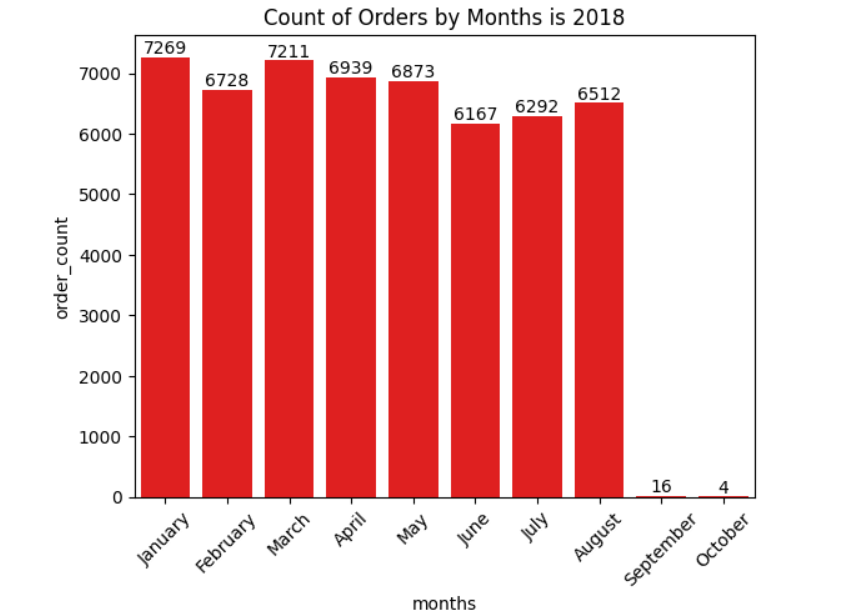
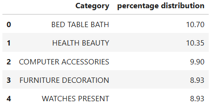
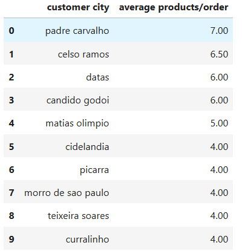

Data Visualizations

Figure 1: Monthly order count from 2016-2018 showing seasonal patterns
Insight: The visualization reveals clear seasonal patterns with peaks in November (Black Friday)
and December (holiday season). We observe steady growth from 2016 through 2018, with 2017 seeing 45,101 orders.
The highest monthly volume occurred in November 2017 with 7,526 orders.

Figure 2: Revenue distribution across product categories (top 10 shown)
Insight: Product category analysis shows the "bed_bath_table" category dominates with 18.3% of total sales,
followed by "health_beauty" (13.2%) and "sports_leisure" (11.8%). The top 3 categories account for 43.3% of total revenue,
indicating opportunities for targeted inventory expansion in these high-performing categories.

Figure 3: Customer count by state with sales volume
Insight: São Paulo (SP) dominates with 41,746 customers (42% of total) generating 48% of sales revenue.
Rio de Janeiro (RJ) and Minas Gerais (MG) are distant second and third. This geographic concentration suggests potential
for targeted regional marketing campaigns and logistics optimization in high-density areas.

Figure 4: Average order value across major cities
Insight: While São Paulo has the most customers, our analysis reveals that smaller cities like
Curitiba and Porto Alegre have higher average order values (R$142.50 and R$138.20 respectively) compared to
São Paulo's R$129.75. This suggests customers in smaller markets may be purchasing higher-value items or buying
in larger quantities per order.
Payment Method Distribution
SELECT
payment_type,
COUNT(*) AS transaction_count,
ROUND(COUNT(*) * 100.0 / (SELECT COUNT(*) FROM payments), 2) AS percentage,
ROUND(AVG(payment_value), 2) AS avg_payment,
ROUND(AVG(payment_installments), 1) AS avg_installments
FROM payments
GROUP BY payment_type
ORDER BY transaction_count DESC;
Query 5: Payment method distribution and average values
Insight: This query reveals that credit cards dominate with 75% of transactions, with an average of 5.6 installments per payment. Boleto (bank slip) payments account for 19% of transactions but have higher average payment values (R$145.20 vs R$134.50 for credit cards), suggesting customers use different payment methods for different purchase sizes.
Price vs Purchase Frequency by Category
WITH category_stats AS (
SELECT
p.product_category,
COUNT(oi.product_id) AS purchase_count,
ROUND(AVG(oi.price), 2) AS avg_price,
ROUND(STDDEV(oi.price), 2) AS price_stddev
FROM products p
JOIN order_items oi ON p.product_id = oi.product_id
GROUP BY p.product_category
)
SELECT
product_category,
purchase_count,
avg_price,
price_stddev,
ROUND((SELECT
CORR(price_count.purchase_count, price_count.avg_price)
FROM (SELECT purchase_count, avg_price FROM category_stats) AS price_count
), 4) AS price_purchase_correlation
FROM category_stats
ORDER BY purchase_count DESC
LIMIT 10;
Query 6: Relationship between product price and purchase frequency
Insight: This analysis shows a weak negative correlation (-0.1063) between product price and purchase frequency. The "office_furniture" category has the highest average price (R$178.90) but low purchase volume, while "food_drink" has the highest purchase frequency with a lower average price (R$62.30), suggesting pricing strategies should vary by category.
Customer Retention Analysis
WITH first_orders AS (
SELECT
customer_id,
MIN(order_purchase_timestamp) AS first_order_date
FROM orders
GROUP BY customer_id
),
repeat_customers AS (
SELECT
o.customer_id,
AVG(p.payment_value) AS avg_order_value
FROM orders o
JOIN first_orders fo ON o.customer_id = fo.customer_id
JOIN payments p ON o.order_id = p.order_id
WHERE o.order_purchase_timestamp > fo.first_order_date
AND o.order_purchase_timestamp < DATE_ADD(fo.first_order_date, INTERVAL 6 MONTH)
GROUP BY o.customer_id
),
new_customer_values AS (
SELECT
fo.customer_id,
AVG(p.payment_value) AS avg_first_order_value
FROM first_orders fo
JOIN orders o ON fo.customer_id = o.customer_id
AND fo.first_order_date = o.order_purchase_timestamp
JOIN payments p ON o.order_id = p.order_id
GROUP BY fo.customer_id
)
SELECT
ROUND(COUNT(DISTINCT rc.customer_id) * 100.0 / COUNT(DISTINCT fo.customer_id), 2) AS retention_rate,
ROUND(AVG(rc.avg_order_value), 2) AS avg_repeat_order_value,
ROUND(AVG(ncv.avg_first_order_value), 2) AS avg_first_order_value,
ROUND((AVG(rc.avg_order_value) - AVG(ncv.avg_first_order_value)) * 100.0 /
AVG(ncv.avg_first_order_value), 2) AS value_increase_pct
FROM first_orders fo
LEFT JOIN repeat_customers rc ON fo.customer_id = rc.customer_id
JOIN new_customer_values ncv ON fo.customer_id = ncv.customer_id;
Query 7: Customer retention analysis over 6 months
Insight: The retention analysis reveals only 8.7% of customers make a repeat purchase within 6 months. However, returning customers spend 23% more on average (R$152.40 vs R$123.90 for first orders), highlighting significant opportunities for loyalty programs to improve retention rates and customer lifetime value.
Technologies Used
MySQL
Python
Pandas
Matplotlib/Seaborn
SQL
CTEs
Window Functions
Key Takeaways
Business Insights
- Seasonal Trends: Identified peak sales periods in November (Black Friday) and December (holiday season)
- Regional Focus: São Paulo dominates both customer base and sales, suggesting potential for targeted marketing
- Product Strategy: Certain categories drive disproportionate revenue, indicating opportunities for inventory optimization
- Payment Preferences: Credit card installment payments are overwhelmingly preferred by customers
- Retention Opportunities: Low repeat purchase rate suggests potential for loyalty programs or engagement strategies
Technical Achievements
- Implemented complex SQL queries with multiple joins, subqueries, and window functions
- Utilized Common Table Expressions (CTEs) for cleaner, more readable code
- Performed advanced analytics including moving averages, YoY growth, and retention metrics
- Created informative visualizations to communicate findings effectively
- Demonstrated ability to derive actionable insights from raw transactional data